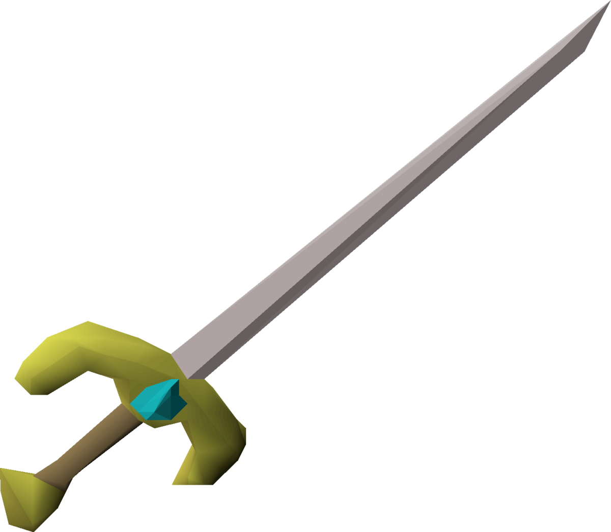

The combination of these two have shown outstanding performance, on my machine while also running the server in standard fixed mode it runs about 11-12ms with resize mode running around 15-17ms but this can vary when you continuously enlarge the game applet, regardless in the majority of its use it stays at 50fps with little to no effort.The combination of these two have shown outstanding performance, on my machine while also running the server in standard fixed mode it runs about 11-12ms with resize mode running around 15-17ms but this can vary when you continuously enlarge the game applet, regardless in the majority of its use it stays at 50fps with little to no effort.


A 2005 RENDITION : APOLLO AND DANES MITB
A KOTLIN AND JAVA COLLECTIVE
Evergreen is aimed to be a lightweight and modern rendition of the 2005 gamepack, the game engine was built using apollo which is a high-performance, modular RuneScape emulator with a collection of utilities for managing data files and plugins.
The combination of these two have shown outstanding performance, on my machine while also running the server in standard fixed mode it runs about 11-12ms with resize mode running around 15-17ms but this can vary when you continuously enlarge the game applet, regardless in the majority of its use it stays at 50fps with little to no effort.